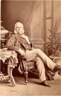

Beaubien-Perrault-Benington - Person Sheet
Beaubien-Perrault-Benington - Person Sheet

NameHenry Stuart
Birth1815-1816, Québec, Québec915
Death22 Jan 1879, London, England1463
BurialMount Royal Cemetery
Occupationavocat
FatherHon. Andrew Stuart (1785-1840)
MotherMarguerite Dumoulin (1781-1838)
Spouses
Birth5 Nov 1814, Québec, Québec1461
Death3 Dec 1869, Montréal, Québec9
Burial7 Dec 1869, St. James Anglican, Montreal, Quebec1462
FatherHon William III Smith (1769-1847)
MotherSusanna Webber
Notes for Henry Stuart
Lawyer. Buried in Montréal.
Once owner of Forges du St Maurice: From DBC entry on Sir Andrew Stuart:
With businessman John Porter, Stuart in 1851 acquired the Saint-Maurice ironworks from his brother Henry Stuart for £16,559. Henry had taken possession in 1846 but, lacking capital, was forced to lease the works the following year to James Ferrier*, a Montreal businessman, who kept them in operation until 1851 but neglected maintenance. The facilities were in an advanced state of disrepair when Porter and Stuart became the owners. In spite of government assistance and extensive renovations, such as the enlargement of the blast-furnace, Stuart and Porter had to abandon running the ironworks in 1857 or 1858, following a long court battle with former partners and serious financial reverses. The government, which acted as the principal creditor in the case, repossessed the works, which were sold to John McDougall* in 1862.
1464 [Marriage] Henry Stuart, Esq of the City of Montreal, Advocate, Bachelor, was married (by License) to Caroline Susanna Smith, of the city of Quebec, Spinster, daughter of the Honorable William Smith, this sixteenth day of March in the year of our Lord 1841
by me ??
Henry Stuart
Caroline S Smith
Wm Smith, father
Susanna Smith, mother
A Stuart, brother
Chas Webber Smith, brother
John Porter
915
1463 Holborn district includes Gray’s Inn and Lincoln’s Inn. Appears as Henry Stewart
Once owner of Forges du St Maurice: From DBC entry on Sir Andrew Stuart:
With businessman John Porter, Stuart in 1851 acquired the Saint-Maurice ironworks from his brother Henry Stuart for £16,559. Henry had taken possession in 1846 but, lacking capital, was forced to lease the works the following year to James Ferrier*, a Montreal businessman, who kept them in operation until 1851 but neglected maintenance. The facilities were in an advanced state of disrepair when Porter and Stuart became the owners. In spite of government assistance and extensive renovations, such as the enlargement of the blast-furnace, Stuart and Porter had to abandon running the ironworks in 1857 or 1858, following a long court battle with former partners and serious financial reverses. The government, which acted as the principal creditor in the case, repossessed the works, which were sold to John McDougall* in 1862.
1464 [Marriage] Henry Stuart, Esq of the City of Montreal, Advocate, Bachelor, was married (by License) to Caroline Susanna Smith, of the city of Quebec, Spinster, daughter of the Honorable William Smith, this sixteenth day of March in the year of our Lord 1841
by me ??
Henry Stuart
Caroline S Smith
Wm Smith, father
Susanna Smith, mother
A Stuart, brother
Chas Webber Smith, brother
John Porter
915
1463 Holborn district includes Gray’s Inn and Lincoln’s Inn. Appears as Henry Stewart